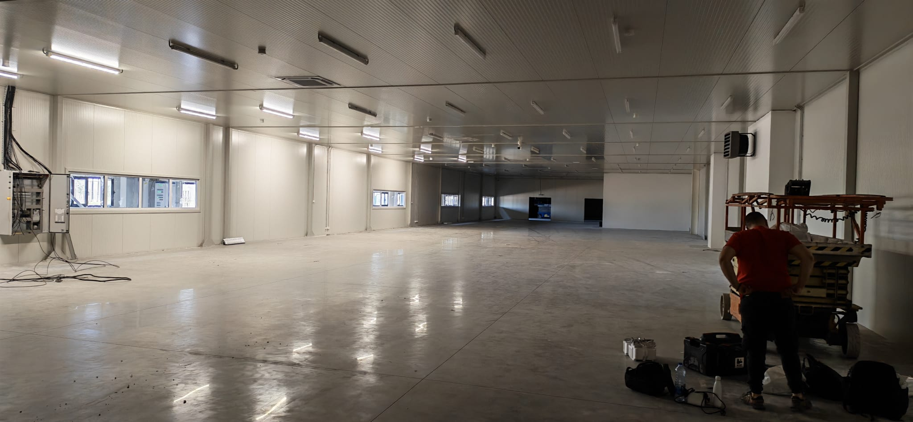

Robust network infrastructure
A network designed for demanding operational environments and continuous system operation.


Technology infrastructure for industrial environments that demand stable operation, high system availability and reliable support for daily operations.
Industrial facilities need systems that work reliably under complex operating conditions, with clearly organised infrastructure and long-term stability. TR Services develops industrial solutions that bring network infrastructure, security systems and support for key operations together into one functional, sustainable technology whole.
A network designed for demanding operational environments and continuous system operation.
Visibility and monitoring of spaces and processes, with centralised review of recordings.
Organisation of movement and security zones across the entire industrial complex.
Support for systems that need a stable, uninterrupted connection.
A service model for critical infrastructure systems, with defined response times.
In an industrial environment, technology systems have to fit how the facility operates, how the space is organised, its security requirements and the continuity of its operations. That is why we design solutions that match the actual conditions on site, with a focus on clarity, resilience and easier maintenance during day-to-day operation.

In industry, network and security infrastructure is often the foundation that other important services and processes depend on. That is why we pay particular attention to reliability, clear system architecture and the ability to respond quickly when intervention, changes or expansion are needed.

Beyond implementation, long-term support is an important part of any industrial solution. Our approach means systems that are clear, sustainable and ready for future requirements, backed by a service model that keeps the infrastructure stable and reduces the risk of downtime.

Contact us for a consultation and an infrastructure proposal tailored to your facility, operating conditions and the level of reliability your system requires.
Contact us